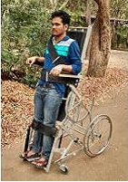

Understanding Locomotor Disabilities

Locomotor disability refers to a condition where a person experiences difficulty in movement due to a
physical disability or impairment in the bones, muscles, or joints. It affects the ability to walk, move, or
perform motor tasks.
Key Points About Locomotor Disability:
Types of Locomotor Disabilities
- Polio: A viral infection affecting the spinal cord, causing paralysis and muscle
weakness.
- Cerebral Palsy:A group of disorders that affect movement and muscle coordination
due to brain damage before, during, or after birth.
- Muscular Dystrophy: A genetic condition causing progressive muscle weakening and
loss of muscle mass.
- Spinal Cord Injuries: Damage to the spinal cord that may result in partial or
complete loss of motor function and sensation below the injury site.
Symptoms
- Difficulty in walking or moving
- Pain, stiffness, or swelling in joints.
- JMuscle weakness or paralysis.
- Poor coordination or balance.
Diagnosis
TDiagnosis of locomotor disabilities depends on the underlying condition:
- Physical Examination: A thorough clinical examination of motor functions, gait, and physical
movement.
- Imaging Tests: X-rays, MRI, CT scans to assess bone, joint, or muscle damage.
- Electromyography (EMG): To assess muscle electrical activity and nerve conduction studies.
- Blood Tests: To detect infections or genetic markers, especially for conditions like muscular
dystrophy.
Treatment
- Medication: Pain relievers, anti-inflammatory drugs, and muscle relaxants.
- Physical Therapy: Exercises to improve strength, flexibility, and coordination.
- Orthotics or Prosthetics: Devices like braces, wheelchairs, or artificial limbs.
- Surgery: Corrective surgery may be needed for some conditions (e.g., joint
replacement, spinal surgery).
- Assistive Devices: Walkers, canes, or wheelchairs for improved mobility.
Management
Rehabilitation: Ongoing physical and occupational therapy to regain or improve functional abilities.
Assistive Technology: Use of mobility aids, ramps, and home modifications.
Lifestyle Modifications: Maintaining a healthy weight, regular exercise, and joint
care.
Support Groups and Counseling: Emotional support, coping mechanisms, and counseling for
the affected individual and their family.
Prevention
Vaccination: Polio vaccines help prevent certain forms of paralysis.
Safe Practices: Preventing accidents that may cause spinal cord injuries (e.g., road
safety, workplace safety).
Early Diagnosis and Treatment: Identifying conditions like cerebral palsy and muscular
dystrophy early can help manage symptoms better.
Bone Health: Preventing osteoporosis and falls through a balanced diet, exercise, and
proper bone care.